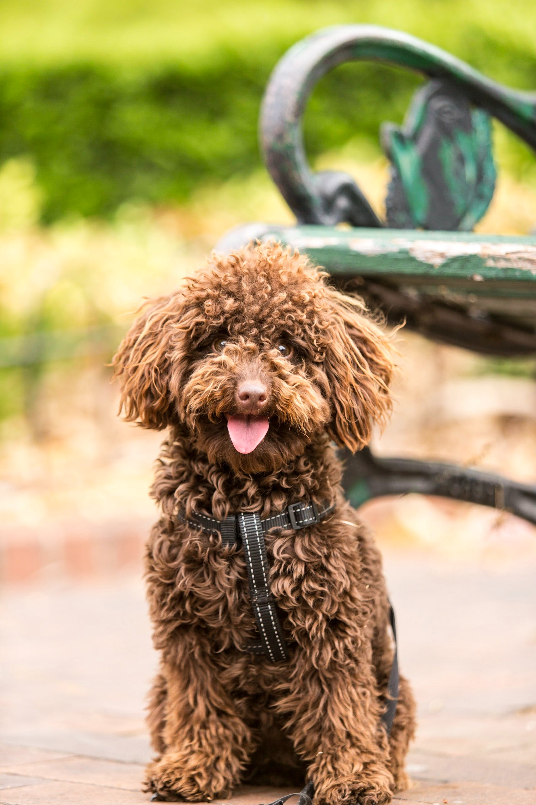

Pet memorial
Here we commerate some of our friends that have been lost along the way.
Rocky

Rocky was a Dalmatian dog weighing 18 kg. He was the only Dalmatian dog we had. Rocky was an active dog who liked to play all the time. He was very loving and friendly. We lost him 8 months ago after an illness that he could not cope with.
Zoey
Zoey or otherwise the playful puppy was the one who had stolen everyone's hearts. We lose her in October 2022 because she could not handle cancer. Zoey was brown and weighed 9 kg.
Cooper

I can call Cooper the unfortunate dog. We found him on the street, abandoned. Cooper was very weak and we took the best care of him. He was a white Labrador dog that weighed 23 kg. He was the sleepiest dog we ever had. Cooper had an accident during a walk from a car and we lose him.
Oliver

Oliver was a brown eyed cat. He weighed 3 kg and we could distinguish 3 colors, white, light brown, and dark brown. He was a smart cat. Oliver liked to play with other cats, showing off his dexterity. We lost Oliver last June and no one knows the reason for hiss loss as he was enjoying full health.